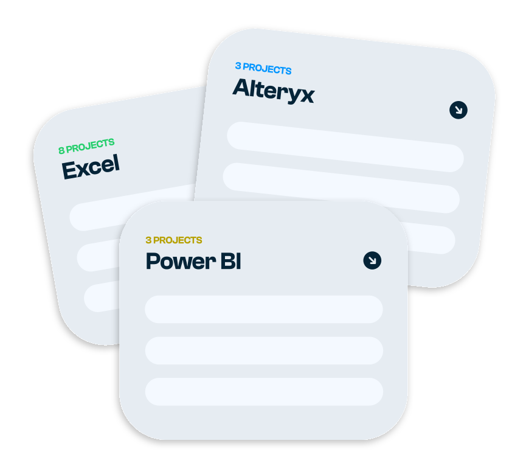
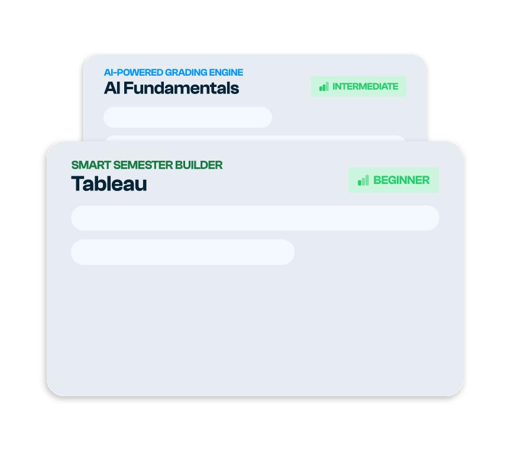
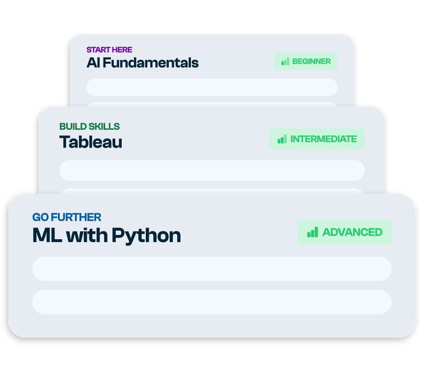
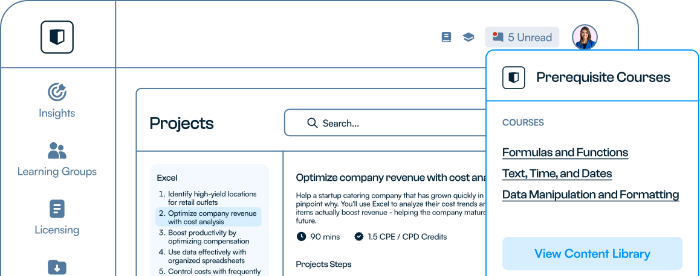
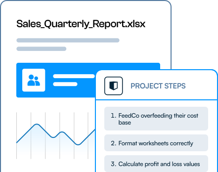

Kubicle Projects
Learn, then apply
with Projects.
Turn knowledge into capability with hands‑on projects that mirror real business challenges.
Turn knowledge into capability with hands‑on projects that mirror real business challenges.
A short walkthrough of how a workplace‑task project unfolds inside the Kubicle platform.
Sample Project / A workplace task as learners see it inside the platform.
Kubicle Projects are immersive, hands‑on learning experiences that bridge the gap between theory and real‑world application. Each project places learners in a realistic business scenario where they solve problems, work with data, adapt to changing priorities and apply their skills in context.
Whether it’s analysing financial performance, automating a workflow or building a simple AI model, every project is designed to simulate the complexity and pace of actual work. With guided instructions, built‑in feedback and instant assessments, Projects transform passive learning into active skill development, helping teams build confidence, improve performance and deliver impact from day one.

Custom Projects give organisations the opportunity to design tailored learning experiences that reflect their unique business context. Working hand‑in‑hand with our instructional design team, customers can replicate their own data workflows, operational processes or business scenarios within a guided learning environment.
Whether it’s a complex reporting pipeline, a specific departmental workflow or an AI use case that mirrors internal tools, Custom Projects allow teams to practise skills in the exact context where they’ll be applied. If your team would benefit from learning with real‑world relevance, and you have a process or dataset you’d like to bring to life, get in touch and we’d love to help you build it.

Kubicle AI‑Guided Projects offer a powerful way for learners to build and validate practical skills using the support of generative AI. In these projects, learners complete a task, such as designing a data visualisation, telling a data‑driven story or preparing a business presentation, and then submit their work for evaluation.
A pre‑trained AI assessor reviews the submission instantly and provides expert‑level feedback based on clear, professional criteria. This creates a scalable and personalised learning experience that mirrors the benefits of one‑to‑one coaching. Learners can practise real‑world tasks, get meaningful feedback within seconds and improve their performance through repeated, guided attempts.

Every Kubicle project follows the same three‑stage rhythm so learners always know where they are and what comes next.

Every Kubicle project begins with a real‑world scenario, whether solving a finance problem, improving operations or analysing data. Each one builds on skills from previous courses, turning learning into practice.

Work through structured steps using real tools and data to deepen practical know‑how. Guided instructions and built‑in feedback keep momentum on track.
Review the work, reflect on progress and walk away with a certificate that proves it. Outcomes that hold up to scrutiny at performance review time.
Looking to understand how Kubicle can better help your organisation meet its learning objectives? Book some time with one of our consultants today.